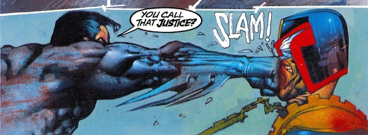

Mostly involving Dredd and some inter-dimensional timey-wimey shenanigans getting him 'ported to Batman's Gotham, along with characters like Mean Machine, Judge Death and Psi-Judge Anderson.
Art by Simon Bisley
| Story Title | Parts | Pages | w indicates a wraparound coverCovers | Year(s) | Issues | Writer | Artist | Colourist | Letterer |
|---|---|---|---|---|---|---|---|---|---|
Linked to: Anderson Psi‑Division Judge Death The Mean Machine Judgement on Gotham | 1 | 62 | Simon Bisley 1w | 1991 | DC, Fleetway | Alan Grant John Wagnervarious | Simon Bisley | <-- | Todd Klein |
| Vendetta in Gotham | 1 | 46 | Mike Mignola 1 | 1993 | DC, Fleetway | Alan Grant John Wagnervarious | Cam Kennedy | Digital Chameleon | Ken Bruzenak |
| The Ultimate Riddle | 1 | 46 | Carl Critchlow 1 | 1995 | DC, Fleetway | Alan Grant John Wagnervarious | Carl Critchlow Dermot Powervarious | <-- | Comicraft, Richard Starkings |
Linked to: Anderson Psi‑Division Judge Death [The Dark Judges] Die Laughing, Book 1 | 1 | 46 | Glenn Fabry 1 | 1998 | DC, Fleetway | Alan Grant John Wagnervarious | Glenn Fabry: 1‑46 Jason Brashill: 36‑45 Jim Murray: 36‑45 various | <-- | Ellie de Ville |
Linked to: Anderson Psi‑Division Judge Death [The Dark Judges] Die Laughing, Book 2 | 1 | 46 | Jim Murray 1w | 1998 | DC, Fleetway | Alan Grant John Wagnervarious | Jim Murray | <-- | Ellie de Ville |
| year | episodes | pages |
| 1984 | 0 | 0 |
| 1985 | 0 | 0 |
| 1986 | 0 | 0 |
| 1987 | 0 | 0 |
| 1988 | 0 | 0 |
| 1989 | 0 | 0 |
| 1990 | 0 | 0 |
| 1991 | 1 | 62 |
| 1992 | 0 | 0 |
| 1993 | 1 | 46 |
| 1994 | 0 | 0 |
| 1995 | 1 | 46 |
| 1996 | 0 | 0 |
| 1997 | 0 | 0 |
| 1998 | 2 | 92 |
| 1999 | 0 | 0 |
| 2000 | 0 | 0 |
| 2001 | 0 | 0 |
| 2002 | 0 | 0 |
| 2003 | 0 | 0 |
| 2004 | 0 | 0 |
| 2005 | 0 | 0 |